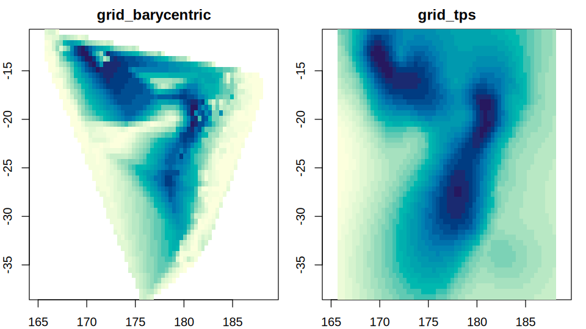
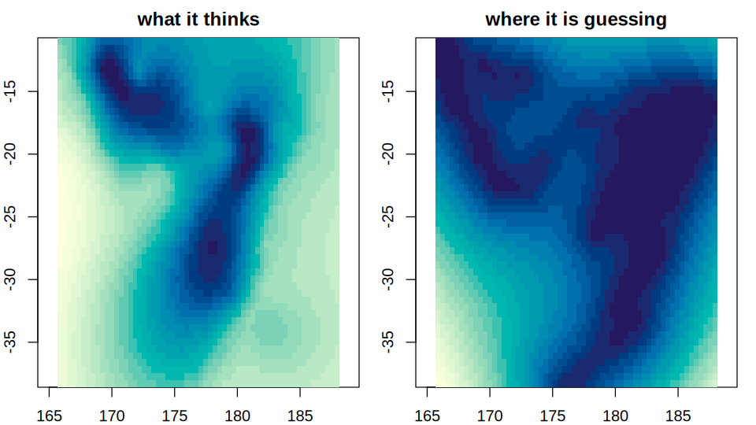

You measured something in some places, and you want a picture of it everywhere. guerrilla is a tour of the ways to do that, with the arithmetic left visible.
library(guerrilla)
xy <- cbind(quakes$long, quakes$lat)
depth <- -quakes$depth
op <- par(mfrow = c(1, 2), mar = c(2, 2, 2, 1))
plot(grid_barycentric(xy, depth), main = "grid_barycentric")
#> 2 duplicated coordinates collapsed with mean()
plot(grid_tps(xy, depth), main = "grid_tps")
par(op)Every method takes the same three things – coordinates, values, and a grid to fill – and gives back a grid. The grid is a list of four elements and nothing else:
str(unclass(grid_spec(xy)))
#> List of 4
#> $ dimension: int [1:2] 60 50
#> $ extent : num [1:4] 165.7 188.1 -38.6 -10.7
#> $ crs : NULL
#> $ values : NULLWhat is here
grid_bin(), grid_voronoi(), grid_barycentric(), grid_idw(), grid_tps(), grid_kriging(), grid_gam(), grid_smooth(), and grid_gdal() for GDAL’s own gridder. grid_tps(), grid_kriging() and grid_gam() also take statistic = "se", which is usually the more interesting picture:
op <- par(mfrow = c(1, 2), mar = c(2, 2, 2, 1))
plot(grid_tps(xy, depth), main = "what it thinks")
plot(grid_tps(xy, depth, statistic = "se"), main = "where it is guessing")
par(op)The point of it
The goal is an easy introduction to interpolating irregular data, and to help find a simple answer rather than to ensure you do the most rigorous modelling possible. That part is your job.
So where a method is normally a call into compiled code, this package also writes the arithmetic out in R next to it, and checks that the two agree. bary_weights() is barycentric coordinates in six lines; grid_barycentric(engine = "R") runs the whole interpolation that way and matches the C to floating point. On this package’s own data the linear interpolation agrees, to floating point or exactly, across four independent implementations: Qhull’s tsearch(), the R engine here, interp::interp(), and GDAL’s gdal_grid.
The tools should not get in the way of exploring, and not everything spatial is geo-spatial. Nothing in the interpolation looks at a coordinate reference system.
Installation
# install.packages("remotes")
remotes::install_github("hypertidy/guerrilla")geometry, vaster, wk and geos are required. Everything else is suggested and needed only by the method that uses it.
Articles
-
vignette("interpolating")– the tour, all the methods on one dataset. -
vignette("grids")– what a grid is, and how to hand one to another package. -
vignette("triangulation")– barycentric weights, Delaunay and Voronoi. -
vignette("projection")– what changes when the coordinates change, and how it all lines up with GDAL.
Related discussions and resources
https://statnmap.com/2018-10-28-play-with-spatial-tools-on-3d-cells-images/
https://docs.qgis.org/2.8/en/docs/gentle_gis_introduction/spatial_analysis_interpolation.html
Please note that this project is released with a Contributor Code of Conduct. By participating in this project you agree to abide by its terms.